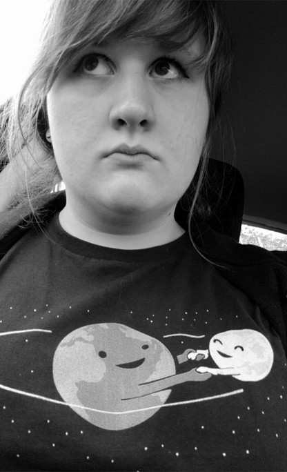

Artist Statement
As an artist, I care about positive messaging. Anything that leaves you feeling uplifted, happy, or just not in a negative mood, is something I hope to strive for. I explore a wide range of subjects. In my work, including, animals, city architecture, and pop culture. So far, I have mainly worked in the digital space, but I plan on combining the digital and analog worlds. While in ART 74, I glitched an image of San Jose to portray me admiring the city but also symbolizing that it is a part of Silicon Valley, the famous location of the tech industry. The glitch is also a bit of a nod to the upcoming changes and buildings being erected around the downtown area within the next ten years. Compiling memes, I created a meme mashup that is almost symbolic to the idea of cute things making your head explode. Using the Expanding Brain meme, I added the Drakeposting meme, Fancy Winnie the Pooh, an image of Hello Kitty, and Shocked Pikachu, but the pixels are becoming more clear, as the final level of the brain expanding. Using minecraft, I created a sculpture of the EA Sims franchise diamond shape, more commonly called a “plumbob” within the series. This was purely out of admiration for the video game. After creating the sculpture in minecraft, I used Cura to 3D print the sculpture. For a net art project, I created a homepage that starts out as a basic “choose your own adventure” type of scenario, where you choose between a cat and a dog. The twist is that the stories you read on the next page gives you a horrific portrayal of the sad aspect of these animals’ lives, as they are surrounded by their loved ones being thrown into dog fighting. Using p5.js, I created a minimalistic self portrait, using simple shapes and colors that are relative to my portfolio website. In addition to the self portrait, I am currently working on a form of DIY Photoshop that mostly display rainbows. In ART 75, the overarching theme of my work involves environment,more specifically, honey bees. For my first project, I created a video using mostly flowers, one shot of a honey bee pollinating, and a buzzing sound to make you feel like you were seeing through the bees’ eyes. My second project was more of a glitched, disproportionate version of that, which added produce and other things that honey bees effect. For my third project, I made a website to portray a similar message, but also to raise awareness by adding external links that give you more information about the cause and effect of life without honey bees. For my final project, I hope to create another video and website with the overall focus being on climate change, and positive things we can do to better our community and be a step closer to saving the environment.
For future projects, I hope to expand on 3D printing technology, as well as integrating analog and digital spaces to become one form.
